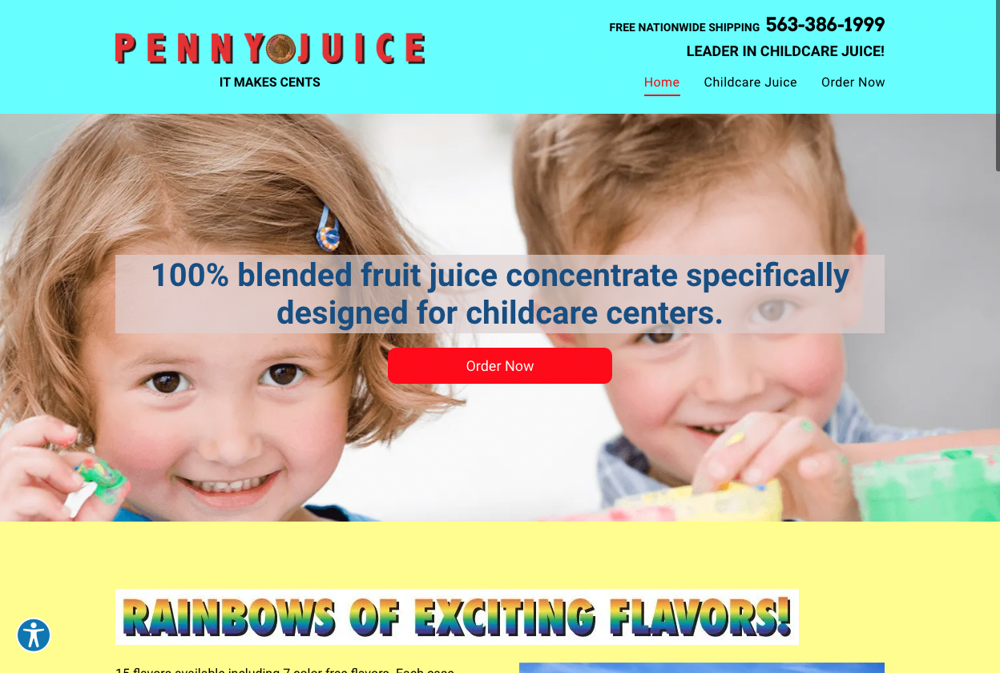
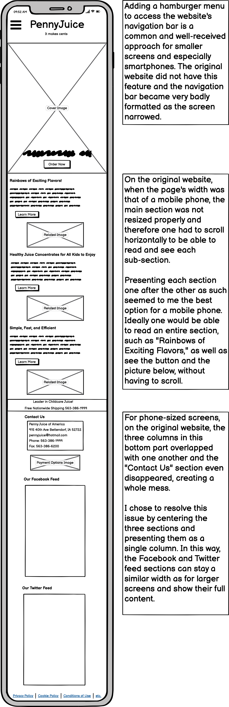
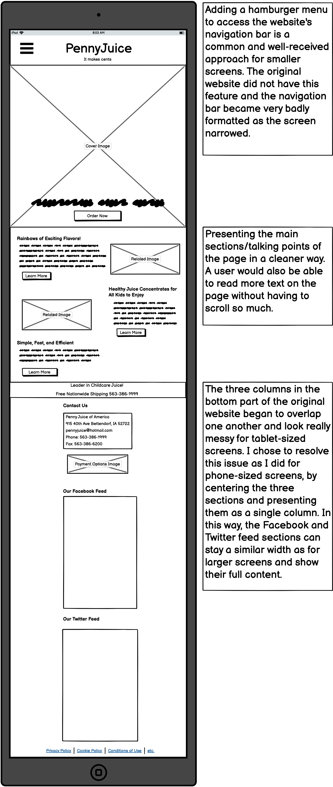
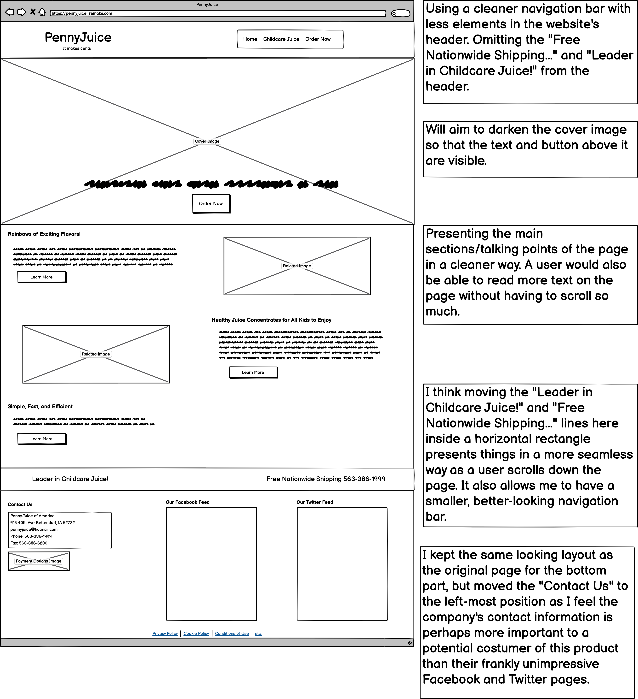
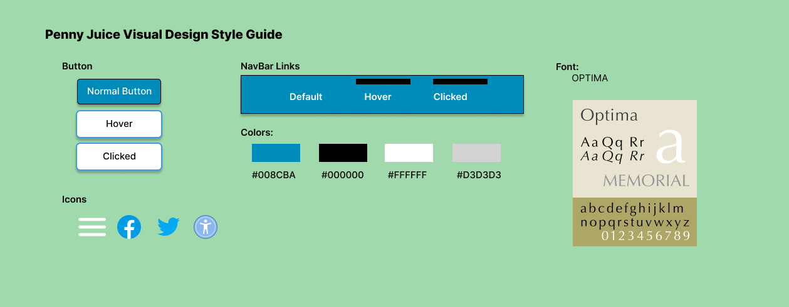

Identifying Usability Problems
Picking a Web Page
I was drawn to pick the Penny Juice website due the its clear lack of unifying color schemes, its confusing and messy presentation, and it's shortfalls for mobile responsiveness. Below is a screenshot from the website's home page as well as a link.
Problems with the Website
- There is a lack of a unifying color scheme
- Some text does not have the best contrast with its background color; as an example, the "100 blended fruit..." text over the website's main image conflicts with the colors around it
- The website essentially falls apart with narrow screens (formatting errors begin at widths less than 1025 pixels)
- There is a lot of scrolling a user has to do to get through what is ultimately not a whole lot of content
- There is inconsistent formatting of section headers creates unecessary confusion
- The sections and their text are quite repetitive
- There seems to be a lot of extra unnecessary space
- The image with the nutrition facts is counterintuitive as it's nearly impossible to read the nutrition facts themselves
- The link to Facebook as well as the company's phone number that appears while scrolling down the website seems awkward and out-of-place
Detecting Possibile Accesibility Problems
I certainly agree with the problems detected by WebAIM, most notably those raised about the website's low contrast and redundant links. WebAIM detected eight instances of very low color contrast, which is quite apparent upon first visiting the site. It also detected six redundant links, another problem I had noticed in my earlier assessment. The multiple redundant links also speak to the redundancy of information of the website in general, which becomes even more obvious when reading and comparing the text under each section.
Visual Redesign
Low-Fidelity Wireframing
MOBILE
TABLET
DESKTOP
Visual Design Style Guide
High-Fidelity Prototyping
Mobile Design
Tablet Design
Desktop Design
Responsive Redesign
Using HTML and CSS, I recreated the Penny Juice home page: https://curiouselephant322.github.io/Penny-Juise-Redesign/